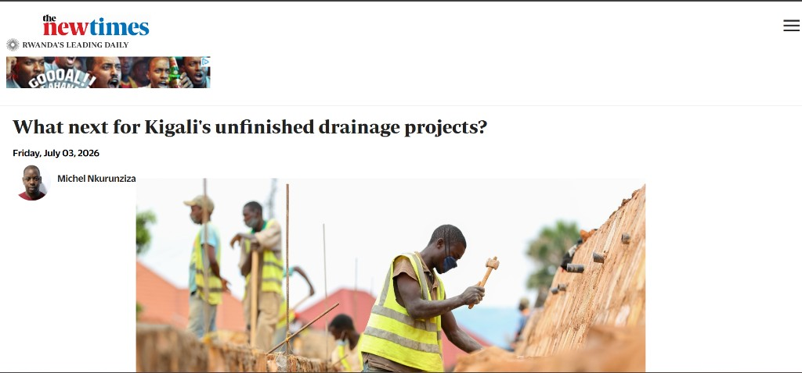

A single place for Rwandans to report issues, reach the right authority, and find every official emergency and government contact number.

Accountability and unfinished projects are national conversations. IJWI turns that top-down pressure into a bottom-up tool — letting any citizen flag a stalled project or issue the moment they see it.
Citizens submit a report with a description, photo, and location in seconds — no need to know which office is responsible.
Every verified emergency & government contact, with a "who do I call?" guide that maps a problem to the right hotline.
Officials get a structured inbox of incoming reports instead of scattered calls and messages.
An AI-generated digest surfaces patterns and priorities so authorities can act on what matters first.
We compiled official numbers straight from .gov.rw sources into a structured, searchable reference — the backbone of the platform's "/numbers" page.
112 Police · 912 Ambulance · 111 Fire · 166 RIB · 3512 GBV
9099 Irembo · 3004 RRA · 4044 RSSB · 1415 RDB · 9090 Immigration
2727 Electricity · 3535 Water · 3988 RURA · 3260 City of Kigali · 199 Ombudsman
Cursor's web search gathered and cross-checked official hotline numbers from 15+ .gov.rw sites, then compiled them into a clean Markdown directory with a "who to call" table.
Generated the React + Vite + TypeScript app structure — routes, pages, a typed API client, and config — instead of wiring boilerplate by hand.
Inspected the repo through the GitHub API to confirm the Lionel-Code branch was pushed, and diffed it against main to explain exactly what changed.
Diagnosed a broken local environment — traced failures to Git not being installed and guided the fix, then planned clone / rename / commit steps.
Authored structured Markdown, README content, and a repo reorganization plan (rename Desktop/ → docs/, phone numbers → phone-numbers.md).
Produced polished, dark-mode, high-tech UI — including this very slide deck — from natural-language prompts.